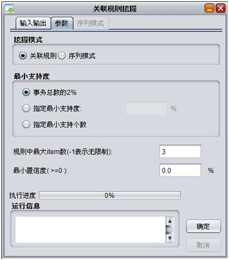
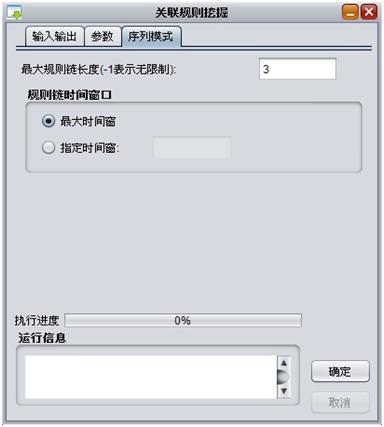
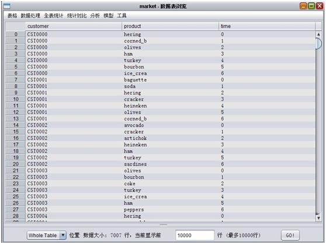
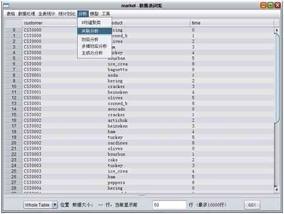
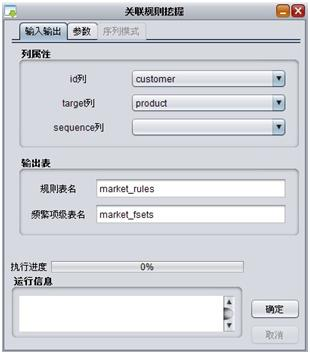
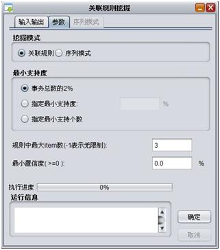
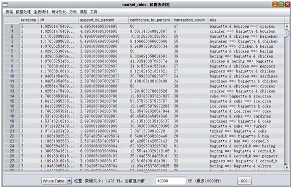
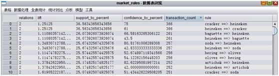
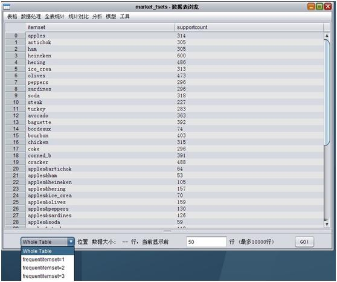

关联分析¶
关联式规则(Association Rules, AR)，又称关联规则，是数据挖掘的一个重要课题，用于从大量数据中挖掘出有价值的数据项之间的相关关系。关联规则解决的常见问题如：”如果一个消费者购买了产品A，那么他有多大机会购买产品B?”以及”如果他购买了产品C和D，那么他还将购买什么产品？”正如大多数数据挖掘技术一样，关联规则的任务在于减少潜在的大量杂乱无章的数据，使之成为少量的易于观察理解的静态资料。关联式规则多不考虑项目的次序，而仅考虑其组合。
关联规则一个经典的实例是购物篮分析(Market Basket Analysis)。超市对顾客的购买记录数据库进行关联规则挖掘，可以发现顾客的购买习惯，例如，购买产品X的同时也购买产品Y，于是，超市就可以调整货架的布局，比如将X产品和Y产品放在一起，增进销量。
函数¶
执行help(Association.analysis)可以查看帮助信息
def analysis(
inputTableName, idxColName, sequenceColName, itemColName, outputTableName, frequentItemsetsTableName,
minSupportCount = -1, minSupportPercent = 0.02, minConfidence = 0.05,
maxItemInAssociation = 3, maxTransactionWindowLen = -1, maxRelation = -1)
- 参数:
- inputTableName：输入表名
- idxColName：输入表中id列名
- sequenceColName：输入表中sequence列，指定后按照序列模式(sequence)规则生成
- itemColName：输入表中item列
- outputTableName：关联规则输出表
- frequentItemsetsTableName：频繁项集输出表
- minSupportCount：(可选)最小支持度(个数)，小于该支持度的规则将被过滤,默认为-1
- minSupportPercent：(可选)最小支持比(分数)，当minSupportCount小于等于0时生效，默认为0.02
- minConfidence：(可选)最小置信度，小于该置信度的规则将被过滤，默认为0.05
- maxItemInAssociation：(可选)项集中最大item数，大于该最大值的规则将被过滤，如果为非正整数则表示无限制，默认为3
- maxTransactionWindowLen：(可选)序列模式(sequence)下最大时序窗口长度，如果sequence为时间类型则需要转换为对应时间差的毫秒级偏移量，如果为非正整数则表示无限制，默认为-1
- maxRelation：(可选)序列模式(sequence)下最长规则链长度，大于该最大值的规则将被过滤，如果为非正整数则表示无限制，默认为-1
关联规则示例：
Association.analysis("association_input", "id", "", "item", "association_output", "output_frequent")
表示计算输入表为association _input， 以其中的id列为id列，item列为item列到association_output表内，频繁项集到output_frequent表内
序列模式示例
Association.analysis("association_input", "id", "time", "item", "association_output", "output_frequent")
表示计算输入表为association_input， 以其中的id列为id列，time列为sequence列，item列为item列，到association_output表内，频繁项集到output_frequent表内
界面¶
关联规则挖掘界面分三个模块:
1. 输入输出模块 ，用于指定输入表中的：
- id列：对应脚本参数idxColName
- target列：对应脚本参数itemColName
- sequence列：对应脚本参数sequenceColName
- 规则表名：对应脚本参数outputTableName
- 频繁项级表名：对应脚本参数frequentItemsetsTableName

2. 参数模块 ：

- 挖掘模式可以指定关联规则挖掘和序列模式挖掘。
- 当指定序列模式挖掘时，必须指定sequence列，对应参数模块可以编辑。
- 最小支持度可以按照事务总数2%，自制定最小支持度和最小支持个数，分别对应脚本参数minSupportCount ，minSupportCount
- 规则中最大item数对应脚本参数maxItemInAssociation
- 最小置信度对应脚本参数minConfidence
3. 序列模式模块 ：

- 最长规则链长度，对应脚本参数maxRelation
- 时间窗口，对应脚本参数maxTransactionWindowLen
例子¶
这里我们采用了一份市场销售记录数据集来进行演示。数据集如下：
当前表有三列，其中customer列标识用户id，product列标识商品名，time列标识用户购买时间。每行标识某用户在某时间内购买了某商品，输入表是一个典型的三元组格式数据。
首先我们进行不考虑时序关联规则挖掘，首先打开关联分析界面：
定义参数如下:
1. 输入输出部分 ：
2. 参数部分 ：
点击确定进行计算，计算分为：
- 数据导入步骤
- 迭代计算频繁项级步骤
- 生成规则步骤
- 转换频繁项级步骤
- 每执行一步都会在下方的运行信息处显示：
- 执行结束后会跳出两张结果表
规则表如下图:
relation列表示规则中项级数；
- list列为改规则对应提升度；
- support_by_percentile为支持度；
- confidence_by_percentile为提升度；
- transaction_count为支持数；
rule为对应的规则：
- a & b =>c 表示a,b发生后发生c的情况；
- a=>b & c 表示a发生后发生b,c的情况。
我们对挖掘后的规则按照提升度先排序，先把数据读取全部，总共1476条规则，点击lift表头，看一下前几条数据：
Cracker是薄脆饼干，经常和Heineken一起被销售，其中置信度，支持度都很高，提升度也不错，因此可以将该规则作为推荐结果之一展示给用户，当用户购买了其中一个，推荐另外一个是一个不错的选择。
再看一下频繁项级表：
其中frequentitemset=k中存储的是频繁K项级的内容，itemset为频繁项，item之间以&分割，supportcount列为对应的支持度。